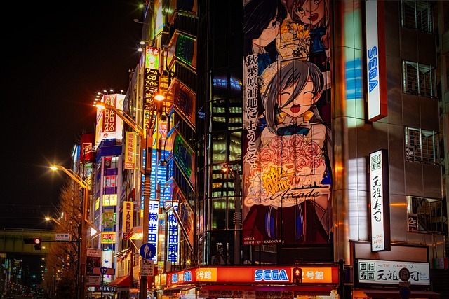
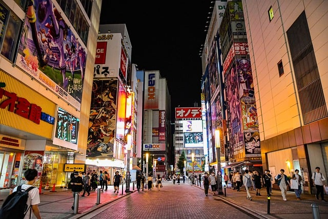

Akihabara empezó como un centro de actividad del mercado negro durante la postguerra, para convertirse después en el escaparate de la tecnología japonesa, lleno a rebosar de tiendas que venden todo tipo de productos electrónicos y de informática a todo el mundo. Más recientemente, se ha convertido en el hogar cultural de los apasionados fans de los juegos, el manga y el anime "los otaku". Toda el área es un templo urbano para los adoradores de la subcultura japonesa con ídolos pop y cosplayers. Pasea por las calles de Akihabara para vivir una experiencia cultural única.
Las calles de Akihabara que durante la postguerra japonesa alojaron al mercado negro de vendedores de componentes electrónicos, están ahora llenas de tiendas legítimas de electrónica que venden todo lo que sea eléctrico. Estos pequeños comercios compensan su reducido tamaño con una ardiente pasión por su tema de interés. Muchas tiendas ofrecen duty-free (libres de impuestos) para que tu bolsillo rinda más.
Las subculturas obsesionadas con los juegos, el manga, el coleccionismo de figuras y el anime que constituyen la cultura otaku; están firmemente arraigadas en Akihabara. Entre las numerosas tiendas de componentes electrónicos se encuentran santuarios dedicados a obsesiones particulares. Akihabara Radio Kaikan y Akiba Culture Zone, por ejemplo, alojan muchas tiendas dedicadas al anime, manga y juegos. En Tokyo Leisure Land podrás jugar a una variedad de juegos, y los jugadores profesionales, lo visitan con frecuencia, ya que ahí se celebran torneos y eventos. Los icónicos salones recreativos de Akihabara se han renovado como GiGO, pero siguen ofreciendo un paraíso para los jugadores de videojuegos con varias plantas de entretenimiento. Y cuando necesites tomarte un descanso, puedes continuar tu experiencia otaku visitando alguno de los muchos cafés temáticos de Akihabara.
Akihabara alberga otro elemento distintivo de la cultura pop japonesa: Las Idol . El Teatro AKB48 es la cuna de uno de los grupos musicales más populares de los últimos tiempos, AKB48, y sus devotos admiradores todavía se acercan al área con el deseo de poder ver a su miembro favorito del grupo. Las calles pueden abarrotarse durante los fines de semana si llegan grupos de cosplayers transformados en sus personajes preferidos. Tú también puedes unirte a la diversión en cualquier momento con solo visitar alguno de los estudios fotográficos con disfraces
Afortunadamente para esto tenemos varias opciones, pero acontinuacion nombraremos 3 de las opciones mejor calificadas en una pagina de viajes (expedia.com.mx)
1.- Akihabara Washington Hotel. Hotel con gran comodidad cerca de Santuario Kanda
2.- Remm Akihabara. Hotel con gran comodidad cerca de Domo de Tokio
3.- Nohga Hotel Akihabara Tokyo. Hotel de primer nivel cerca de Parque Ueno